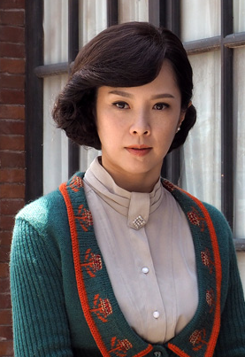
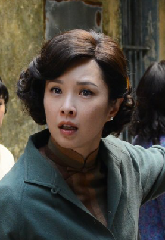

周偉訓/吳天心飾
空軍遺屬軍眷，人稱副隊娘。父為前清武舉人，家族為遼北省望族。抗戰時期就讀於華南師範大學體育科，在校時與師娘結為手帕交。其夫原為第十一大隊副隊長，對日抗戰時殉職，之後依著空軍傳統，學長陣亡，托妻學弟，改嫁小邵。性格直率的她，常用她的大嗓門，嘻笑怒罵的掩飾內心荒寂。離亂歲月，每在時代嘯浪裡安然漂出的她，祇能任著師娘及朱青漸漸偏離了人生航線，無能為力……小周的故事最能代表空軍特殊「傳統」的角色，面對隨時可能發生的死亡與別離，在堅強中掩藏著脆弱。她的個性率真，情感卻細膩，活潑中帶點潑辣的個性，讓有她在的場合總能帶來溫暖與歡笑。口頭禪：「狗肉進不了大上海」

